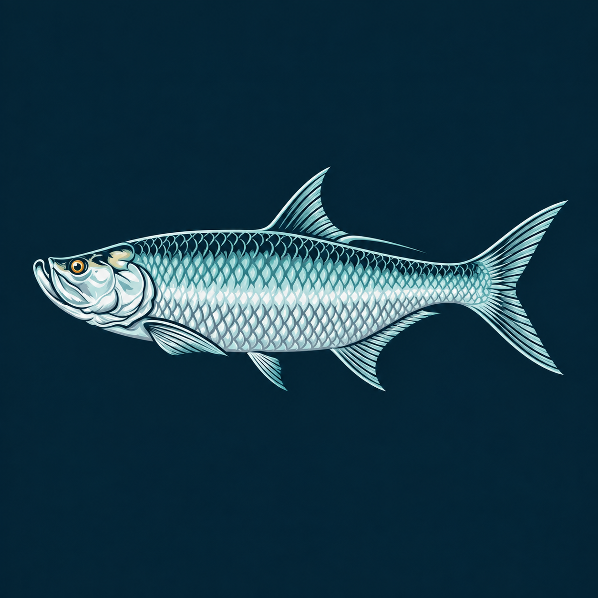

Available
Productivity
Tarpon Notes
Tasks, notes, and an interactive calendar in one focused space—with Student, Business, and Minimalist modes plus interchangeable backgrounds.

Tarpon SoftIndependent software studio
Tarpon Soft creates useful, focused apps with character—built independently with care for simplicity, privacy, and the people using them.
We believe good software should feel clear, respect your attention, and do its job beautifully.
Our products
Each Tarpon Soft product begins with a simple question: can this everyday task feel better?
Productivity
Tasks, notes, and an interactive calendar in one focused space—with Student, Business, and Minimalist modes plus interchangeable backgrounds.
Marine
A practical companion designed to help owners and crews keep vessel information and responsibilities organized.
About Tarpon Soft
Tarpon Soft is a small independent software studio. We build apps with a personal point of view, choosing considered details over unnecessary complexity.
Being independent keeps us close to our products and our users. Feedback reaches the person making the software, and every update is shaped by real needs.
Say hello
We’d like to hear from you.
dime.totter0x@icloud.com ↗